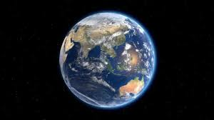
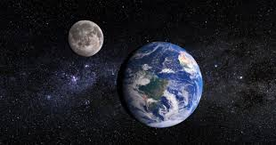
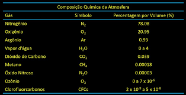
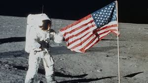

O planeta Terra, onde vivemos, é o terceiro planeta do Sistema Solar, e dentre os quatro planetas rochosos, é o maior. Além disso, é o único planeta que se sabe ser habitável.
A gravidade do planeta Terra é cerca de 9,8m/s².
A Lua é o único satélite natural da Terra. Além da Lua, existem satélites de observação da Terra, que orbitam o planeta e capitam imagens e dados; esses dados são enviados de volta para a Terra para serem processados e analisados por cientistas.
Seu diâmetro é de 12.752 Km, e sua circunferência é de 40.072 Km.
A atmosfera da Terra é composta por uma mistura de gases,mas os principais e mais abundantes são, respectivamente: Nitrogênio, Oxigênio, Argônio e Vapor D'água. Além desses, também é composta por Gás Carbônico, metano, ozônio e hélio.
A Apollo 11 foi a primeira missão espacial que levou o Homem à Lua, em julho de 1969. O tripulante em questão era Neil Armstrong, que foi o primeiro homem a pisar na lua. A missão tinha como objetivo a exploração da Lua, e a instalação de uma câmera para a observação da superfície. A missão surgiu devido à corrida espacial entre os Estados Unidos e a União Soviética.
